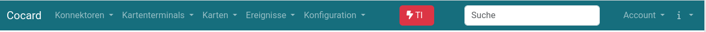
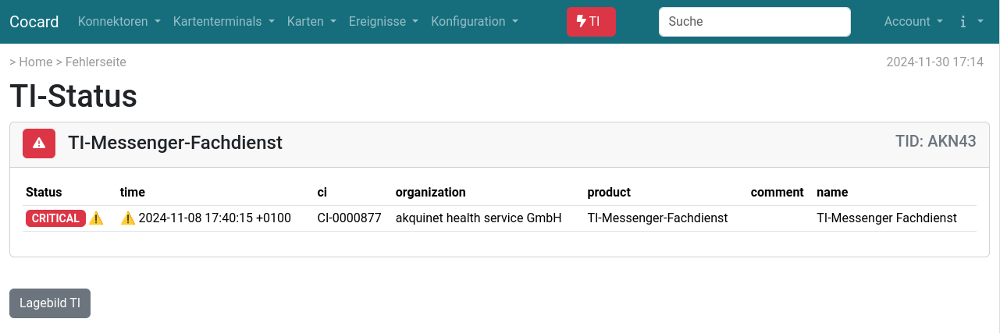
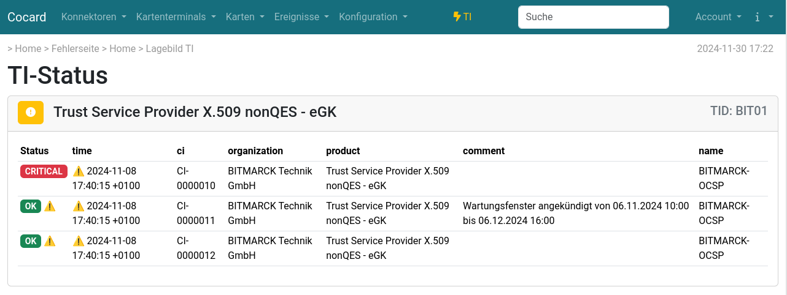
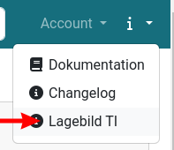
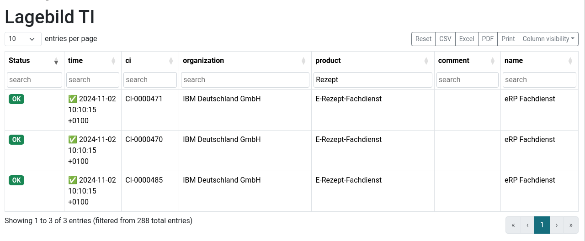
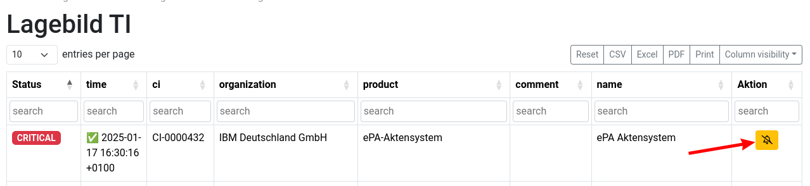

TI-Lagebild
Cocard fragt alle 5min den TI-Status über das API https://ti-lage.prod.ccs.gematik.solutions/lageapi/v1/tilage/ ab. Wenn ein Dienst nicht verfügbar ist, erscheint oben im Menü eine Störungsanzeige:

Mit dem Klick auf den Button gelangt man in die Übersicht der gerade nicht verfügbaren Services.

Ist nur eine Komponente eines Dienstes nicht verfügbar, der Dienst aber als Ganzes noch funktionsfähig, erscheint in der Menüleiste ein gelbes Symbol. Die Übersicht zeigt dann, welche der Komponenten gerade verfügbar sind und welche nicht.

Eine Gesamtübersicht aller von der Gematik überwachten Dienste erhält man über


Über Column visibility lassen sich weitere Spalten einblenden.
Einzelne Services stummschalten (mute)
Wenn nicht alle Services aller Anbieter relevant sind, kann man einzelne Einträge stummschalten. Dazu blendet man in der Übersicht die Spalte Aktion ein und muted den nicht benötigten Eintrag. Stummgeschaltete Services fließen nicht in den Gesamstatus mit ein und werden auf der Seite der gerade nicht verfügbaren Services nicht mit angezeigt.

Ressourcen
-
Die offizielle Status-Seite der Gematik ist https://fachportal.gematik.de/ti-status. Dort finden sich auch Informationen zu geplanten Wartungen.
-
Beschreibung der verwendeten API: https://github.com/gematik/api-erp/tree/master/docs_sources/erp_ps_probing_lagebild-source.adoc